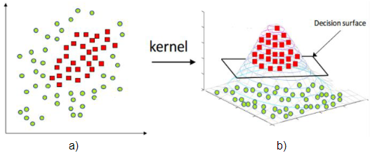
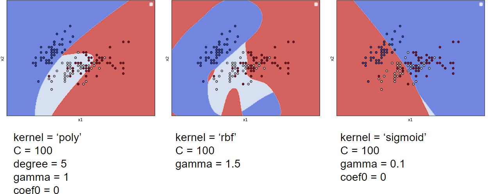

3.1 Máquinas de vetores de suporte e função kernel#
A formulação exposta na Seção 2.4 apresenta como são obtidos os hiperplanos de separação através do método SVM. No entanto, conforme já discutido e justificado, existem problemas nos quais o uso de hiperplanos não proporciona uma separação adequada/razoável. Como alternativa, é possível remapear os padrões que não são linearmente separáveis no espaço de atributos original para outro espaço, denominado espaço característico, onde a separabilidade pode ser maior. Na Figura 3.2 b), é ilustrado um exemplo fictício de mapeamento dos padrões apresentados na Figura 3.2 a), possibilitando, assim, a separação linear.

O processo de mapeamento exemplificado na Figura 3.2 pode ser conduzido implicitamente nas formulações apresentadas nas seções 2.4.1 e 2.4.2. Para tal, basta substituir os produtos internos \(\textbf{w}^{T}\textbf{x}^{i}\) e \(\textbf{w}^{T}\textbf{x}_{i}^{T}\textbf{x}_{j}\) presentes na regra de decisão (2.17) e na função objetivo (2.21) do método por uma função \(K(\cdot,\cdot)\) que respeite as condições do \(\textit{Teorema de Mercer}\):
\(\textbf{Teorema de Mercer}\): seja \(\textbf{u}\),\(\textbf{v}\) \(\in \mathcal{X} \subseteq \mathbb{R}^{n}\) e \(\phi(\cdot)\) um mapeamento \(\textbf{u}→\phi(\textbf{u})\in \mathcal{H}\) sendo \(\mathcal{H}\) um espaço de Hilbert. O produto interno \(\phi(\textbf{u})^{T}\phi(\textbf{v})\) é equivalente à função contínua e simétrica \(K(\textbf{u},\textbf{v})\) que satisfaz:
\(\begin{equation} \int_{\mathcal{X}}\int_{\mathcal{X}}K(\textbf{u},\textbf{v})h(\textbf{u})d\textbf{u}d\textbf{v} \ \geq 0 \tag{3.1} \end{equation}\)
para qualquer \(h(\textbf{u})\), tal que:
\(\begin{equation} \int_{\mathcal{X}}h(\textbf{u})^{2}d\textbf{u}<+∞ \tag{3.2} \end{equation}\)
Como consequência deste teorema, para qualquer função \(K(\cdot,\cdot)\) que satisfaça as condições 3.1 e 3.2, é possível afirmar que existe um espaço vetorial onde tal função define um produto interno. Essas funções são denominads \(\textbf{funções kernel}\).
Embora o Teorema de Mercer forneça condições necessárias para construção de funções que definem o produto interno em algum espaço vetorial, não são fornecidos meios para definir qual é este espaço, ou seja, não é fornecida uma maneira direta de definir \(\phi(\cdot,\cdot)\) a partir de \(K(\cdot,\cdot)\). Além disso, verificar que uma dada função \(K(\cdot,\cdot)\) atende às condições do Teorema de Mercer pode não ser trivial.
Alguns exemplos de funções kernel frequentemente adotadas na resolução de problemas gerais são as funções de Base Radial (\(\textit{Radial Basis Function}\) - RBF), Polinomial e Sigmoide, apresentadas respectivamente nas Equações 3.3, 3.4 e 3.5. O produto interno ente os vetores do espaço de atributos é denominado por função kernel Linear, apresentado na Equação 3.6.
\(\begin{equation}
K_{RBF}(\textbf{x}_{i},\textbf{x}_{j}) = \mathcal{e}^{-γ||\textbf{x}_{i}-\textbf{x}_{j}||^{2}} \tag{3.3}
\end{equation}\)
\(\begin{equation}
K_{Pol}(\textbf{x}_{i},\textbf{x}_{j}) = (\gamma \textbf{x}_{i}^{T}\textbf{x}_{j} + α)^{q} \tag{3.4}
\end{equation}\)
\(\begin{equation}
K_{Sigm}(\textbf{x}_{i},\textbf{x}_{j}) = (\gamma \textbf{x}_{i}^{T}\textbf{x}_{j} + α) \tag{3.4}
\end{equation}\)
\(\begin{equation}
K_{Linear}(\textbf{x}_{i},\textbf{x}_{j}) = \textbf{x}_{i}^{T}\textbf{x}_{j} \tag{3.5}
\end{equation}\)
em que \(q \in \mathbb{R}^{*}_{+}\) e \(\gamma\),\(\alpha \in \mathbb{R}^{*}_{+}\) são parâmetros associados.
As funções kernel possuem ainda propriedades úteis na definição de novos kernels. Algumas destas propriedades são:
\(\cdot\) Combinação entre kernels: sejam \(K_{1}\) e \(K_{2}\) duas funções kernel, então qualquer combinação linear \(v_{1}K_{1} + v_{2}K_{2}\), em que \(v_{1},v_{2}\geq 0\), é uma função kernel;
\(\cdot\) Produto de Schur: sejam \(K_{1}\) e \(K_{2}\) duas funções kernel, então \(K_{1}\cdot K_{2}\) é uma função kernel;
\(\cdot\) Multiplicação por escalar: seja \(K_{1}\) uma função kernel e \(v \ in mathbb{R}^{+}\), então \(vK_{1}\) é uma função kernel;
\(\cdot\) Multiplicação entre funções: sejam \(h_{1}\) e \(h_{2}\) duas funções reais, definidas no espaço de atributos \(\mathcal{X} ⊂ \mathbb{R}^{n}\), então \(h_{1}\cdot h_{2}\) é uma função kernel.
Existem ainda formas alternativas de construir as funções kernel a partir de resultados já apresentados na literatura, como utilizando o modelo de funções kernel de base radial, definidos por:
\(\begin{equation} K(\textbf{x}_{i},\textbf{x}_{j}) = f(m(\textbf{x}_{i},\textbf{x}_{j})) \tag{3.6} \end{equation}\)
em que \(m: \ \mathcal{X} \times \mathcal{X} → \mathbb{R}_{+}\) é uma métrica e \(f: \mathbb{R} → \mathbb{R}\) é uma função contínua estritamente positiva, como a função exponencial \(f(x) = \mathcal{e}^{-x}\).
Para fins de exemplificação, o método SVM é aplicado sobre um problema multicalsse usando as funções kernel RBF, Polinomial e Sigmoide. Os resultados são apresentados na Figura 3.3.

Quando feito o uso do kernel Polinomial com parâmetros \(q=1\), \(\gamma = 1\) e \(\alpha = 0\), ele é reduzido ao kernel linear, o que também reduz o método SVM à sua versão linear (Seção 2.4.2). Uma maior flexibilização da superfície de decisão é alcançada com o aumento do parâmetro \(q\), relacionado ao grau do polinômio implícito que mapeia os dados para um novo espaço de dimensão superior. Em relação ao kernel RBF, o aumento de \(\gamma\) também proporciona superfícies de decisão ajustadas de características e particularidades dos dados. por outro lado, quando utilizado o kernel Sigmoide, o aumento de \(\gamma\) implica em superfícies de decisão com maior tendência linear.
Em relação ao emprego da biblioteca Scikit-Learn para aplicação do método SVM com uso das funções kernel discutidas, é suficiente que sejam declarados os parâmetros que estabelecem o kernel desejado e suas respectivas parametrizações. A opção \(\textbf{kernel='poly'}\), \(\textbf{'rbf'}\) ou \(\textbf{'sigmoid'}\) determina a função kernel a ser empregada entre as formas Polinomial, RBF e Sigmoide, respectivamente. Em relação aos parâmetros \(q\), \(\gamma\) e \(\alpha\), eles são determinados através de \(\textbf{degree}\), \(\textbf{\gamma}\) e \(\textbf{coef0}\). No código 3.1, estão exemplificadas as instanciações de classificadores SVM com o uso da funções kernel discutidas e os parâmetros associados.
#Código 3.1 - Diferentes instanciações do classificador SVM com uso de funções kernel
g1 = SVC(C=100, kernel='poly',degree=5, coef0=0,gamma=1, decision_function_shape='ovr')
g1 = SVC(C=100, kernel='rbf', coef0=0, gamma=1.5, decision_function_shape='ovr')
g1 = SVC(C=100, kernel='sigmoid', degree=5,coef0=0, gamma=1.5, decision_function_shape='ovr')